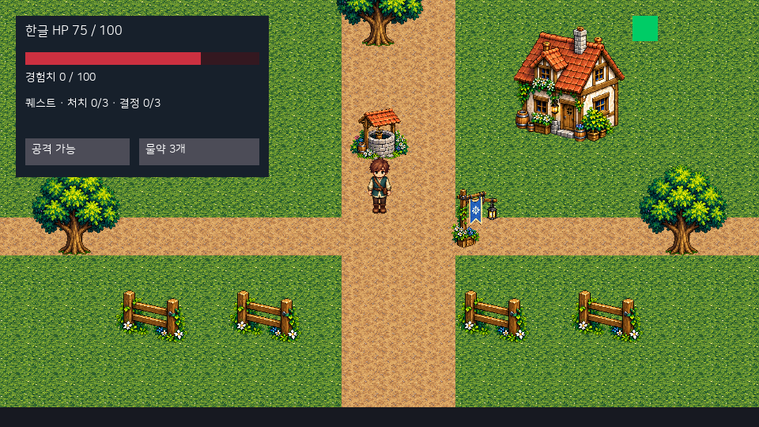
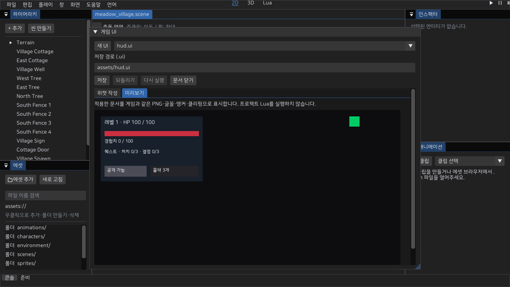

27. 저장한 게임 UI와 Lua 상태 표시
main 소스는 .ui 문서를 씬의 GameUi에 지정하고 프로젝트 Lua의 표시값을 로컬 Play/MyGame에 출력한다. 기존 설치 0.3.0에는 이 연결이 없다. UI 문서 작성·Undo/Redo·저장/재열기와 게임 렌더 미리보기를 연결했다. 버튼 클릭·키보드 포커스·IME, 온라인 HUD는 다음 작업이다. 이 문서의 Button은 표시와 활성 상태 갱신을 지원하며 실제 입력 경로에는 아직 연결하지 않았다.

만들기와 불러오기
- 창 → 게임 UI → 새 UI로 문서를 만들거나, 임포트한
.ui를 에셋에서 더블 클릭/우클릭으로 연다. HUD 예제의 임포트와 외부 텍스트 편집도 지원한다. PNG 제작은 외부 도구를 사용한다. - 에셋 브라우저의 에셋 추가 또는
MyEditor --project <project.myeproj> --import-asset <hud.ui> --asset-destination hud.ui --headless --frames 1로 임포트한다. 대상과.meta는 덮어쓰지 않는다. 새 GUID를 만들고 기존 스캔 경로에서 재사용한다. - 인스펙터의 컴포넌트 추가에서 GameUi를 붙이고
document에.ui에셋을 드래그한 뒤 씬을 저장한다. 한 로컬 월드에서 enabled인 GameUi는 하나다. 여러 패널/창은 같은 문서의 자식으로 둔다. - 프로젝트의 ObjectBehavior Lua에서 아래 API를 호출한다. 문서와 PNG는
on_init전에 준비된다. 문서/PNG 변경은 Stop/재실행으로 반영한다. 변경 파일의 자동 반영은 미연결이다. Stop/재시작은 저장한 문서로 새 트리를 만들고 UI의 런타임 값은 씬이나.ui에 저장하지 않는다.
.ui의 top-level은 __version: 1, version: 1, controllerScript: "", root다. 노드의 __version: 1, typeName, name, styleClass: "", anchors, properties, children은 예제와 같은 기존 UiDocument/JsonArchive 형식을 사용한다. controllerScript 자동 로딩과 UiSkin 연결은 현재 앱에서 지원하지 않아 지정하면 실패한다. ObjectBehavior를 사용한다. 저장 문자열을 생성하는 C++ API는 SaveDocumentJson이며 기존 WriteJsonFile 경계로 파일에 저장할 수 있다. 에디터 UI 문서 작성은 아래 작업 흐름을 따른다.
UI 문서 작성 · main 소스
위젯 작성 탭에서 트리·이름·앵커·속성을 편집하고 적용한 뒤 저장한다. 미리보기 탭은 동일한 InstantiateGameUi·GameOverlay 렌더 경로로 한글·PNG 영역·게이지·클리핑을 표시하며 프로젝트 Lua를 실행하지 않는다. 이 패널은 창 메뉴 또는 MyEditor --project <project.myeproj> --ui assets/ui/hud.ui로 연다.

- 새 문서는 화면을 채우는 Panel이다. 선택한 부모 아래에 Panel/Label/ProgressBar/Button/Image/Window/StackLayout/GridLayout을 추가한다. 루트는 유지하고 자식 서브트리는 제거·Undo로 복구한다. 위젯 이름은 Lua 조회 키다. 버튼 캡션은 자식 Label로 작성한다.
- 앵커 프리셋으로 모서리/중앙/채우기를 선택하고 위치·크기·여백을 조절한다. 속성 키/값은 아래 표를 따른다. texture 값에는 에셋 브라우저의 PNG를 드래그할 수 있다. 실제 PNG 크기/영역 오류는 미리보기와 Play에서 보고한다.
- 입력 중인 속성은 문서에 임시 보관한다. 적용은 전체 문서 검증 후 Undo 1회로 확정한다. 취소는 적용 전 값을 버린다. 잘못된 이름/앵커/중복/속성은 오류를 표시하고 원래 문서와 편집값을 보존한다. 임시 값이 있으면 다른 위젯/문서 선택·구조 변경·Undo를 잠그며, 먼저 적용/취소한다.
- 적용 전 편집도 프로젝트의 미저장 변경이다. 패널을 다시 만들더라도 임시 값이 남고, 프로젝트 교체는 기존 미저장 확인을 따른다. Ctrl+S는 파일 이름을 정한 포커스 문서를 저장한다. 적용 전 속성이 있으면 저장을 거부하고 패널에서 적용/취소하도록 안내한다. 되돌리기/다시 실행과 Ctrl+Z/Y는 UI 문서에 분리하며 씬 데이터·선택을 교체하지 않는다.
- 저장 경로는 프로젝트 assets 안의
.ui다. 처음 저장하거나 다른 이름으로 저장할 때 기존 파일/메타를 덮어쓰지 않는다. 기존 문서는 그 파일을 열어서 수정한다. 저장은 기존 원자적 WriteJsonFile 경로를 사용하고 성공 후에만 경로·saved 지점을 변경한다. 실패하면 파일/GUID·dirty·임시 편집을 보존한다. 성공 후 에셋 갱신이 실패하면 파일 저장 완료와 인덱스 실패를 구분해 표시한다. - 문서 닫기는 저장 후 닫기/버리기/취소를 제공한다. 적용한 값과 임시 UI의 PNG 참조 모두 에셋 삭제를 보호한다. Play 중 작성·저장을 잠그며 Stop → UI 저장 → 재실행으로 반영한다. 미저장 UI를 Play 스냅샷에 자동 포함하거나 파일 감시로 반영하지 않는다.
미리보기는 960×540 게임 UI 렌더 결과를 편집기 패널 폭에 맞춰 보여준다. 좁은 패널의 축소는 제작 미리보기이며 게임 창의 정수 확대·여백 계약과 구분한다. 캔버스 드래그/재부모화·전용 타입별 속성 위젯·UiSkin/controllerScript·클릭/포커스/IME·온라인은 이 작성 단위의 지원 범위가 아니다.
좌표와 속성
UI는 좌상단 원점·+Y 아래인 논리 픽셀 좌표다. 월드 카메라 회전·줌·스냅 잔차를 적용하지 않는다. 기본 960×540을 월드와 같은 정수 확대/여백으로 표시한다. 계산된 사각형은 정수로 반올림한다. MyGame·에디터·별도 Play의 출력은 UNORM 색을 사용한다.
점 앵커는 min=max이며 offsetMin은 앵커에서 pivot까지의 위치, sizeDelta는 크기다. 스트레치 앵커는 min/max가 다르고 offsetMin/Max는 시작/끝 여백이다. anchors는 anchorMinX/Y, anchorMaxX/Y, pivotX/Y, offMinX/Y, offMaxX/Y, sizeX/Y를 저장한다. 모서리는 0/1, 중앙은 0.5다. 앵커·피벗은 [0,1], 크기는 음수가 아니며 오프셋/크기는 유한한 ±32768 범위다.
properties는 { "__version":1, "key":"text", "value":"문구" } 배열이다. 중복 키·모르는 속성·잘못된 타입은 거부한다.
| 위젯/범위 | 저장할 속성 | 값/제약 |
|---|---|---|
| 공통 | visible, interactive, clip | 문자열 true/false. clip은 자식 출력을 부모 사각형으로 자른다 |
| Panel/Window | background, tint, texture, source | 배경 true/false, #RRGGBB 또는 #RRGGBBAA, PNG GUID, x,y,w,h |
| Window | title | 저장한 제목. 제목을 자동 표시하는 게임 창 스킨은 미연결 |
| Image | texture, source, tint | PNG GUID, 원본 픽셀 영역, 색 |
| Label | text, fontSize, colour | UTF-8 리치 텍스트, 정수 8~96px, 색. 라벨 사각형 밖은 자른다 |
| ProgressBar | value, maximum, fill, track | 0≤value≤maximum≤32768, maximum>0. 왼쪽부터 채우는 정수 폭 |
| Button | enabled, texture, source | true/false, 기본 PNG/영역. 캡션은 자식 Label; 비활성은 어둡게 표시 |
| StackLayout/GridLayout | spacing | 유한한 0~32768. 방향/패딩·열/셀 크기의 문서 속성 편집은 미연결 |
source는 각 정수 [0,8192], w/h>0이고 PNG 실제 크기 안이어야 한다. 생략하면 전체 PNG다. 파일·GUID 누락, 잘못된 에셋 타입/PNG/영역은 Play/MyGame 실행 실패로 보고한다. .ui는 최대 4 MiB, 트리는 512노드/24단계, 노드별 속성은 32개, 이름은 64 bytes이며 비어 있지 않은 이름은 문서에서 고유하다. 속성 값/텍스트는 4096 bytes다. UI PNG가 다른 앱별 식별자를 사용하지 않도록 AssetDatabase/VFS/AssetManager를 재사용한다. .ui의 PNG 참조와 씬의 GameUi 참조는 기존 삭제 검사로 보호한다.
게임 상태 연결
function Core:update_hud()
local h = self:hud_snapshot() -- 게임 프로젝트의 읽기 전용 값. 엔진 API가 아니다.
assert(mye.ui.set_progress("hp", h.hp, h.max_hp))
assert(mye.ui.set_text("stats", "레벨 " .. h.level .. " · HP " .. h.hp .. " / " .. h.max_hp))
assert(mye.ui.set_text("experience", "경험치 " .. h.xp .. " / " .. h.xp_to_next))
assert(mye.ui.set_text("potion_caption", "물약 " .. h.potion_count .. "개"))
assert(mye.ui.set_enabled("potion", h.can_use_potion))
assert(mye.ui.set_enabled("attack", h.can_attack))
end초기화와 게임 규칙이 상태를 성공적으로 변경한 뒤 호출한다. 엔진이 HP·물약·보상 규칙을 계산하거나 매 프레임 프로젝트 상태를 폴링하지 않는다. Core:hud_snapshot()은 게임 제작자가 작성한 메서드이므로 예제 HUD API와 구분한다.
| API | 성공 | 실패/보존 |
|---|---|---|
| mye.ui.set_text(name, text) | Label 문자열 갱신 | 일반 텍스트의 {는 리치 태그로 해석하지 않는다. 4096 bytes/NUL/정확한 string 타입 검사 |
| mye.ui.set_progress(name, value, maximum) | ProgressBar 값/최댓값 갱신 | 정확한 number, 유한 범위 검사; 실패 시 기존 두 값 유지 |
| mye.ui.set_enabled(name, enabled) | Button의 표시/interactive 상태 | 정확한 boolean; 클릭 기능의 완료가 아니다 |
| mye.ui.set_visible(name, visible) | 위젯 표시/숨김 | Hidden은 레이아웃 공간을 유지한다 |
모두 정확한 인수 수와 1~64 bytes/NUL 없는 이름을 요구하며 성공은 true, 실패는 nil, error다. 없는 문서/이름·다른 위젯 타입은 실패다. 여러 setter를 묶은 트랜잭션은 제공하지 않으므로 필요한 이름/타입을 문서에 일치시킨다. 값이 잘못되었을 때 조용히 성공으로 진행하지 않는다. 오류를 처리하거나 assert로 Lua 오류 위치를 남긴다. 인증 온라인 클라이언트는 ObjectSystem/Lua를 만들지 않아 이 로컬 API를 실행하지 않는다.
확인한 범위와 다음 조건
python tools/verify-game-ui.py --config Release는 공식 임포트→GUID→저장한 씬→로컬 Play/MyGame의 HP100/75/0·버튼 활성/비활성·PNG 영역의 실제 픽셀과 누락/손상/범위 오류를 검사한다. 별도 Debug 실행도 가능하다. 문서 패널의 네이티브 캡처는 프로젝트 Lua를 실행하지 않고 동일 PNG 영역/게이지 픽셀을 검사한다. 네이티브 MyEditor Play의 CLI dump는 Play 렌더 타깃이며 별도 Play 창의 화면 캡처와 구분한다. 실제 장치 클릭·해상도 변경·포커스·IME·온라인 검증으로 계산하지 않는다.
실제 앱 출력은 격리한 샘플의 저장 UI와 Lua 표시값이다. UI 전체를 한 배경 PNG로 그리지 않는다. 한글 표시와 IME 입력은 다른 기능이다. UI 문서 작업대/Undo/저장 실패 보존을 연결했다. 다음 완료 조건은 버튼 이벤트·모달 포커스/게임 입력 차단·좌표 변환, 실제 창 크기/DPI/한글 입력, 배포 패키지와 서버 상태 연결이다. 현재 설치본/릴리즈를 수정하거나 완성 MMORPG를 선언하지 않는다.